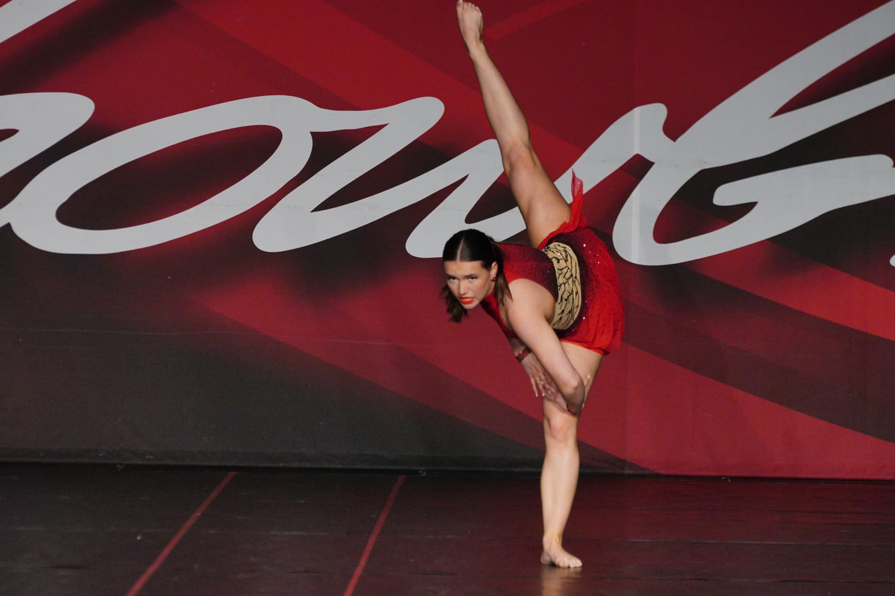
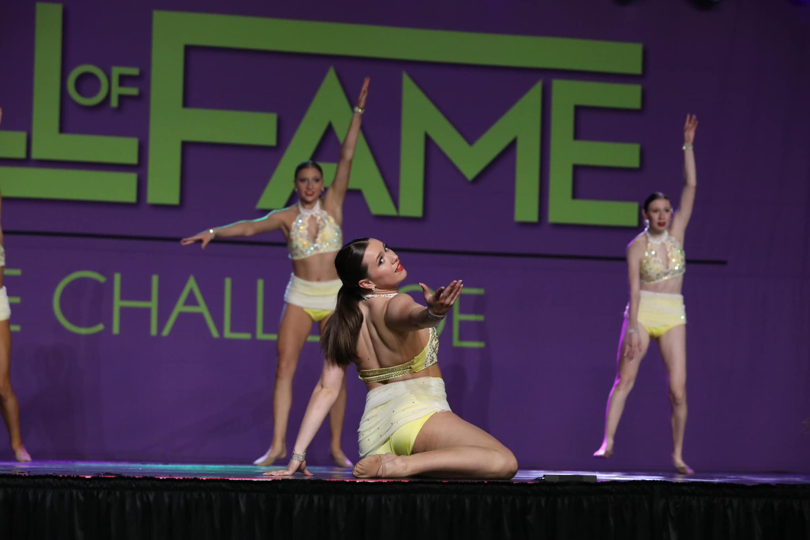

These photos are from my last year competing through a studio competition. For twelve years I had been dancing at the same studio. They were my family then and I am glad to say that they are still my family today, as I have come back as a teacher. This was my most emotional year dancing but it was a good competition year. I even got to choreograph my own solo.


These photos are from my first two years dancing. The picture on the far right is me at my very first dress rehersal which happened to be in the Maybee Fieldhouse here at Avila. Every year since then I have come back to prepare for competition either in Maybee or in the Pavilion. I grew up on this campus and it will always be a part of my life. This is when I knew one day I was going to be on the Avila Gitter Girls dance team.